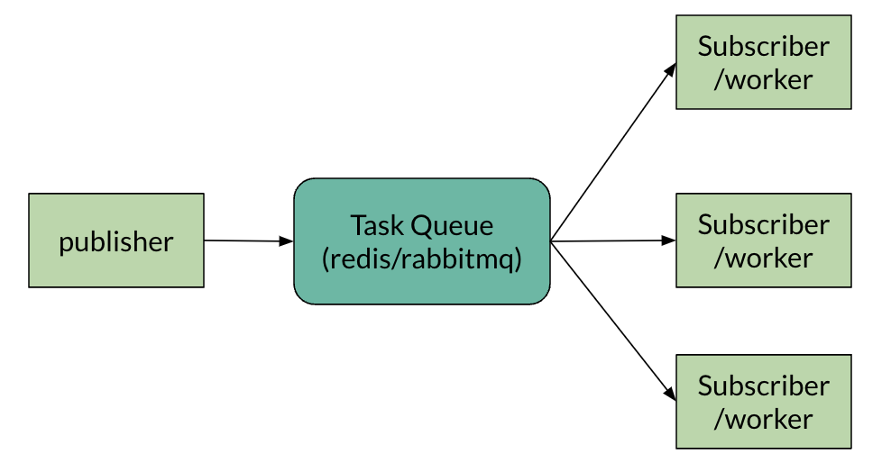

Celery - Distributed Task Queue
Posted on Sat 15 June 2024 in Journal
| Abstract | Celery - Distributed Task Queue |
|---|---|
| Authors | Walter Fan |
| Category | learning note |
| Status | v1.0 |
| Updated | 2024-06-15 |
| License | CC-BY-NC-ND 4.0 |
2024-06-15
Celery 英文中芹菜的意思, 它在 python 世界中作为一个分布式任务队列的类库应用颇广. 它的基本概念也挺简单, 类似于消息队列, 遵循了生产者/消费者模式.
俗话说, 单丝不成线, 枯木不成林, 双拳难敌四手, 好汉架不住人多. 一个人任务多得做不过来, 有两种方法可以应对太多或者太重的任务, 一是推迟处理, 过会儿再做, 一是分派处理, 委托给别人做.
这两种方法, celery 都能帮你搞定

使用 Celery 在 Flask 应用中启动异步任务，可以按照以下步骤进行：
- 安装 Celery 和消息代理：Celery 需要一个消息代理来发送和接收消息。常见的选择包括 RabbitMQ 和 Redis。以 Redis 为例作为代理。
安装 Celery 和 Redis：
bash
pip install celery redis
- 创建 Celery 实例：在 Flask 应用中，创建一个新的文件用于 Celery 配置，通常命名为
celery.py。在这里，你将使用代理的 URL 设置 Celery 实例。
```python from celery import Celery
def make_celery(app): celery = Celery( app.import_name, backend=app.config['CELERY_RESULT_BACKEND'], broker=app.config['CELERY_BROKER_URL'] ) celery.conf.update(app.config) return celery ```
- 在 Flask 中配置 Celery：在 Flask 应用的配置中，添加 Celery 代理和结果后端的 URL。
python
# config.py 或 app 配置字典中
CELERY_BROKER_URL = 'redis://localhost:6379/0'
CELERY_RESULT_BACKEND = 'redis://localhost:6379/0'
- 初始化 Celery：在 Flask 应用工厂或主文件中，使用你创建的函数初始化 Celery。
```python from flask import Flask from yourapplication.celery import make_celery
def create_app(): app = Flask(name) app.config.from_object('config') celery = make_celery(app) return app ```
- 定义任务：定义一个你想要异步运行的函数。使用
@celery.task装饰器使其成为 Celery 任务。
python
@celery.task
def add(x, y):
return x + y
- 启动 Celery 工作进程：在终端中，运行 Celery 工作进程以开始处理任务。
bash
celery -A yourapplication.celery worker --loglevel=info
- 从 Flask 调用任务：在 Flask 路由中，你现在可以调用任务并传递参数给它。任务将被发送到工作进程异步执行。
```python from flask import Flask, jsonify from yourapplication.celery import add
@app.route('/add', methods=['GET']) def add_route(): x = request.args.get('x', type=int) y = request.args.get('y', type=int) result = add.delay(x, y) return jsonify({'task_id': result.id}), 202 ```
- 处理任务结果：如果你想处理任务的结果，可以使用
AsyncResult类来检查任务的状态。
```python from celery.result import AsyncResult
@app.route('/task_status/
记得将 yourapplication 替换为你的 Flask 应用包的实际名称。同时，确保在启动 Celery 工作进程之前 Redis 服务器正在运行。
这是一个基本的设置，可以让你开始在 Flask 应用中使用 Celery。 根据你的需求，你可能想要配置 Celery 以使用更高级的选项，比如设置任务的结果后端、配置任务的时间限制，或者处理重试和失败。
为简单起见, 也可以用 docker-compose 启动上述三个进程 1. flask app 2. redis 3. celery worker
version: '3.8'
services:
web:
build: ./web
ports:
- "5000:5000"
depends_on:
- redis
environment:
- FLASK_ENV=development
- CELERY_BROKER_URL=redis://redis:6379/0
- CELERY_RESULT_BACKEND=redis://redis:6379/0
redis:
image: "redis:alpine"
ports:
- "6379:6379"
worker:
build: ./worker # Replace with the path to your Celery worker's Dockerfile
depends_on:
- redis
command: celery -A yourapplication.celery worker --loglevel=info
environment:
- CELERY_BROKER_URL=redis://redis:6379/0
- CELERY_RESULT_BACKEND=redis://redis:6379/0
其中 flask app 的 docker file 如下
# Dockerfile for Flask App
FROM python:3.8-slim
WORKDIR /app
COPY requirements.txt .
RUN pip install -r requirements.txt
COPY . .
CMD ["flask", "run", "--host=0.0.0.0"]
而 celery worker 的 docker file 如下
# Dockerfile for Celery Worker
FROM python:3.8-slim
WORKDIR /app
COPY requirements.txt .
RUN pip install -r requirements.txt
COPY . .
CMD ["celery", "-A", "yourapplication.celery", "worker", "--loglevel=info"]
本作品采用知识共享署名-非商业性使用-禁止演绎 4.0 国际许可协议进行许可。